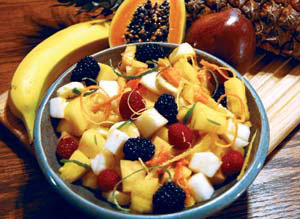
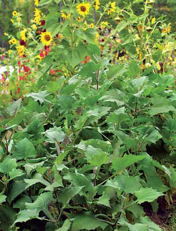
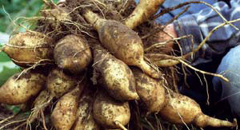
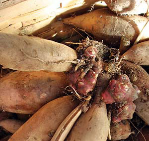

Easy to grow and store, high-yielding, supernutritious and crunchy like an apple, yacon (pronounced ya-kon) is one of the many “new” vegetables coming to us from South America. In reality, this fruitlike vegetable has been cultivated throughout the Andes for more than a millennium. South Americans eat it as a fruit; they also use the huge leaves to wrap foods during cooking, in the same way cabbage leaves are used in Germany, grape leaves in the Mideast and banana leaves in the tropics. Only recently - thanks to some adventurous green thumbs - have North Americans begun to see yacon in produce markets.
In addition to its distinctive flavor - a satisfyingly sweet cross between celery and Granny Smith apples - yacon is noted for its high fiber and low calorie content. The tubers and leaves contain high levels of inulin, a form of sugar humans cannot easily break down, making it low in calories. Inulin also aids digestion and promotes the growth of beneficial bacteria in the intestine, while inhibiting toxic bacteria. Recent research also has found that yacon tubers and leaves are a good source of antioxidants. Yacon is an ideal food for diabetics and weight watchers, but it will make a delicious addition to anyone’s diet. Plus, the tubers only get sweeter in storage.
In South America, yacon tubers can have yellow, orange, red, pink and even purple flesh, all with distinct flavors. Unfortunately, only one or two varieties of yacon are available in the United States, and they are white-flesh varieties. All varieties have a crunchy texture, and the water content is high enough that the tubers can be crushed to make juice.
Yacon is delicious eaten fresh with a little sugar or honey and a bit of lemon juice sprinkled over it. (Yacon recipes often contain citrus, because acidity prevents the discoloration that results once the pared tubers are exposed to air.) Many South Americans put yacon in a fruit salad called salpicón (see recipe), because the tubers add a crunchy texture to the mix. Yacon also can be stir-fried, roasted, baked or made into pies and healthy chips. Teas made from the leaves can reduce blood sugar by increasing the amount of insulin circulating in the blood stream. Yacon syrups or powders also can be used as low-calorie sweeteners, and are increasingly available at natural food stores.
Yacon (Smallanthus sonchifolius) is a member of the sunflower family, so it has small yellow flowers, and - like its cousins, dahlias and Jerusalem artichokes - it develops huge tubers. The name yacon is a Spanish derivation of the Quechuan word llaqon, which means “watery” or “water root,” referring to the juiciness of the tubers. Quechua is the original language of the Incas, who spread the cultivation of yacon along the west coast of South America. Legend has it that traveling Inca messengers relied on the tubers to quench their thirst on long journeys.
Because it isn’t a high-energy food, the Spanish Conquistadors ignored yacon. It remained more or less a food of native South Americans until the 1930s. At that time, Italian botanists began breeding new vegetables with yacon because it can be grafted to dahlias, sunflowers and Jerusalem artichokes. Those experiments stopped during World War II, but scientists have begun to re-examine the old research, and are becoming aware of yacon’s many benefits.
If dahlias thrive where you live, then you can grow yacon. It thrives in just about any area that receives consistent moisture and moderate heat. The plants need a long growing season, and the tubers form in fall when the length of day shortens.
Yacon has been cultivated for so long that the flowers no longer produce fertile pollen. It must be propagated by dividing the crown - the knobby part of the plant to which the tubers are attached - found just beneath the soil’s surface. Propagating yacon crowns is similar to dividing potatoes into “seeds”- you simply plant each section sprouting from an “eye.” You can start crown divisions indoors in very early spring or order plants (see “Yacon Sources”). Yacon does not like temperatures below about 40 degrees, so set out your plants when it’s time to plant tomatoes. These are large plants; space them about 3 to 4 feet apart in rich, loamy soil - the more compost the better - and water well during dry spells. Yacon is almost completely pest- and disease-free.
Your diet will be enriched by adding yacon to it, and so will your soil, says Alan Kapuler, who holds a doctorate in life sciences and has been researching yacon for more than 20 years. “In the same way that yacon stimulates good bacteria in our digestive system, it does the same for beneficial soil microbes.” He’s excited about the renewed scientific interest in yacon. “The phenomenon by which yacon increases soil fertility is underappreciated, because we have a limited understanding of how microbes contribute to our health. The new science is truly significant.”
Don’t expect to harvest an abundant crop of tubers the first year, because yacon needs time to adjust to local conditions. After that, yields are generally double to triple those of potatoes. As frost approaches in early fall, put some straw around the base of the plants to protect the tubers underneath. After frost has killed the visible part of the plants (but before the ground freezes), gently lift the crowns by loosening the soil around the tubers with a garden fork. Then carefully remove the entire root system from the ground. Snap the tubers off the crowns and let them sweeten by mellowing in the sun for a couple of weeks.
New plants will not grow from the tubers themselves; only the crowns will produce new plants. Store the crowns indoors in peat moss (like dahlias) or loose in tubs (like potatoes) until early spring. Then split apart the sections that have begun to form green buds, and plant each in its own pot.
A root cellar or cool, dry corner of your basement is perfect for storing yacon tubers until you’re ready to eat them. Because yacon stores so well, you can enjoy the fruits of your labors for up to eight months after the harvest.
South Americans enjoy a fruit salad called salpicón, which contains many tropical fruits that can be difficult to find in the United States. But this versatile Colombian recipe can be made from any combination of fruit. Below is a mix of ingredients found in most supermarkets. Use the fruits you have on hand or let your imagination run wild! Serves 8.
4 cups fresh pineapple; pared, cored and diced
5 cups fresh papaya; pared, seeded and diced
1 mango; pared, pitted and diced
4 cups yacon; pared and diced
4 small red bananas; skinned and sliced
2 cups fresh orange or lemon juice, or more to taste
Optional ingredients:
1/2 cup sugar or honey
1 cup mashed blackberries
1 cup crushed lemon water ice
Combine all the ingredients in a large glass bowl. Serve chilled.
Nichols Garden Nursery
(potted plants spring through fall)
Albany, Ore.
(800) 422-3985
Peace Seeds
(split crowns in fall; potted plants in spring)
Corvallis, Ore.
(541) 752-0421
Seeds of Change
(potted plants in spring)
Henderson, Nev.
(888) 762-7333
Seed Savers Exchange Yearbook
(available to members)
Decorah, Iowa
(563) 382-5990
Heirloom Vegetable Gardening: A Master Gardener’s Guide to Planting, Seed Saving and Cultural History by William Woys Weaver, now on CD. If you want to explore the fabulous flavors, fascinating history and amazing diversity of vegetables, this is the book to start with. Food historian and Mother Earth contributing editor Will Weaver profiles 280 heirloom varieties, with authoritative growing advice and incredible recipes. First published in 1997, Heirloom Vegetable Gardening has since been out of print, with used copies selling online for as much as $300. We are proud to present the original text, with color photos, as a digital book on CD-ROM. Order now.
|
 TABITHA ALTERMAN Salpicón, a fruit salad from South America that brings out the sweet flavor of yacon tubers |
 SCOTT VLAUN Over the course of the growing season, yacon will reach 6 to 8 feet in height with giant showy leaves and small yellow flowers, making it a nice ornamental backdrop plant. |
 SCOTT VLAUN Each yacon plant can yield as much as 10 to 14 pounds of tubers. |
|
 SCOTT VLAUN To save yacon from season to season, store the crown (shown here with tubers attached) in wood chips or peat moss until early spring. Then plant each sprouting “eye” in its own pot. |
|
|